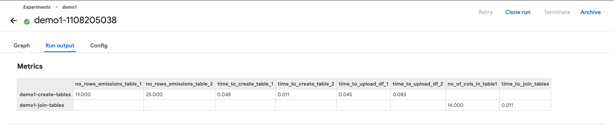

Experiment tracking using Kubeflow Pipelines¶

In this guide you will learn how to use kubeflow pipelines to track metrics from different experiments and runs.
Kubeflow Pipelines is a platform for building and deploying scalable machine learning (ML) workflows. It allows us to automate the running of jupyter notebooks and scripts using a simple workflow. Using Kubeflow pipelines we can automate the running of multiple steps of a ML pipeline like data collection, model training, inference, and control which steps need to be performed sequentially and which should run in parallel.
Kubeflow pipelines also allow us to export metrics from a running pipeline. This helps us compare multiple runs over multiple model training runs. We can also compare the achieved model performance metrics like accuracy, f1, etc.
Pre-requisites¶
Existing kubeflow pipeline instance available and the components (notebooks or scripts) that you want to track metrics for.
For a guide on how to create an pipeline using Elyra, Kubeflow pipelines check out this video
Track Metrics¶
To enable tracking of metrics during the execution of a machine learning experiment, your component must have an output called mlpipeline-metrics which must return a JSON-serialized metrics dictionary. Let’s demonstrate this with the help of an example.
Below we will demonstrate how to capture metrics for the time taken to execute certain queries, and the time taken to upload some files to S3 storage.
Declare a file where you want to store the captured metrics. It must be named
mlpipeline-metrics.json.
# file to store runtime kfpipeline metrics
metrics_file_path = './mlpipeline-metrics.json'
Initialize variables which capture metrics such as time taken to execute certain parts of the code. In the following lines of code, we capture the time taken to upload
emissions_table1.parquetonto S3 asupload_df1_time.
df_emissions.to_parquet("/tmp/emissions_table1.parquet", index=False)
t = time.time()
s3.upload_file(
Bucket=os.environ["S3_BUCKET"],
Key="urgentem/trino/itr_emissions_join_1/emissions.parquet",
Filename="/tmp/emissions_table1.parquet",
)
upload_df1_time = time.time() - t
Aggregate all the metrics captured within the notebook into a dictionary called
metricsand export the json-serialized metrics dictionary into themlpipeline-metricsfile.
metrics = {
"metrics":[
{
"name":"no_rows_emissions_table_1",
"numberValue":len_emssions_data_1,
"format":"RAW"
},
{
"name":"no_rows_emissions_table_2",
"numberValue":len_emssions_data_2,
"format":"RAW"
},
{
"name":"time_to_upload_df_1",
"numberValue":upload_df1_time,
"format":"RAW"
}
]
}
Once the notebook is configured to track metrics and the pipeline has been submitted, you can move over to the kubeflow UI to view the metrics that are being captured during notebook run.

By clicking on a particular run, and moving over to the Run output tab, you can view the metrics captured for each notebook during the particular run.
To compare runs, from the experiments tab, you can select multiple runs and click on “Compare Runs” on the top right. This will show a table comparing the metrics capture during the selected runs.
This can be especially helpful while tracking multiple model training runs, and can be used to capture model performance metrics.

If you want to see an real example of how to integrate experiement tracking, take a look at this notebook.